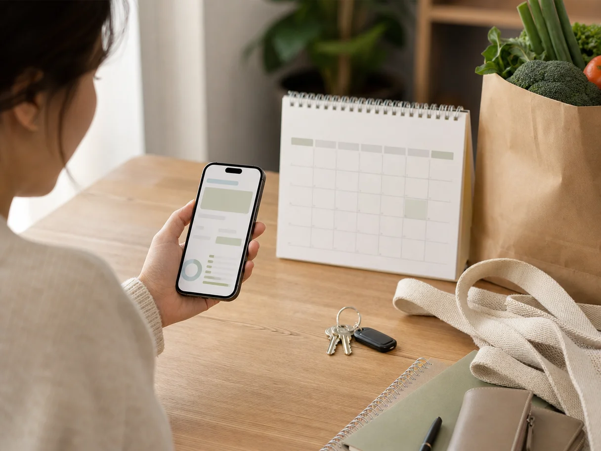

Зарплата пришла недавно, но в середине месяца появляется знакомое чувство: деньги на карте ещё есть, а уверенности — нет. Можно заказать доставку? Купить ребёнку кроссовки? Записаться к врачу? Или через неделю придётся считать дни до следующего дохода?
Проблема обычно не в том, что человек «не умеет обращаться с деньгами». Просто остаток на карте — плохой ответ на вопрос, сколько можно потратить. В этой сумме уже могут лежать деньги на аренду, ипотеку, сад, бензин, продукты, подписки, подарок близкому или давно запланированную покупку. Пока всё это не отделено, любая трата кажется одновременно и возможной, и тревожной.
Дневной лимит помогает убрать эту неопределённость. Это не наказание и не обещание жить на гречке. Это понятная сумма, которую можно расходовать на обычную жизнь до следующей зарплаты, не залезая в деньги с другим назначением.
Почему остаток на карте обманывает
Представим: до зарплаты осталось 12 дней, на всех доступных счетах 36 000 рублей. Кажется, что ситуация неплохая. Но завтра списывается платёж по кредиту, через три дня нужно оплатить кружок ребёнка, дома заканчиваются продукты, а в выходные надо заправить машину.
Если смотреть только на 36 000, можно спокойно потратить несколько тысяч на маркетплейсе — и лишь потом заметить, что обязательствам неоткуда взяться. Деньги не исчезли «непонятно куда»: часть из них с самого начала не была свободной.
Поэтому полезно различать три вещи:
- остаток денег — всё, что сейчас есть на счетах и наличными;
- зарезервированные деньги — суммы под конкретные платежи и планы;
- свободные деньги — то, чем можно распоряжаться до ближайшего дохода.
Именно свободные деньги нужно делить на оставшиеся дни. Не общий баланс.
Базовая формула дневного лимита
Расчёт можно сделать за несколько минут в заметках телефона, на бумаге или в приложении для планирования бюджета:
(доступные деньги − обязательные расходы до дохода − резерв) ÷ количество дней до дохода = ориентир на день.
Если считать руками не хочется, тот же расчёт делает бесплатный калькулятор «Сколько можно тратить до зарплаты»: вычитает обязательные расходы и запас из остатка, а результат делит на дни до следующего дохода.
Допустим, до зарплаты 10 дней. У семьи есть 28 000 рублей. До следующего поступления нужно оплатить:
- 5 000 рублей за сад или школу;
- 3 000 рублей на бензин;
- 7 000 рублей на продукты, если дома почти ничего не осталось;
- 2 000 рублей на уже запланированный визит к врачу.
Ещё 2 000 рублей хочется не трогать на случай мелкой неожиданности: срочного лекарства, такси поздно вечером или сломанного зарядного устройства. Свободными остаются 9 000 рублей. Делим на 10 дней и получаем 900 рублей в день.
Эта цифра не означает, что каждый день надо тратить ровно 900 рублей. В понедельник можно не потратить ничего, а в среду купить бытовую химию и потратить больше. Смысл в другом: за десять дней на все незапланированные траты не стоит выйти за 9 000 рублей.
Какие расходы вычитать до расчёта
Самая частая ошибка — вычесть только крупный и очевидный платёж, например аренду. Но до зарплаты деньги часто уходят не на одну большую вещь, а на несколько вполне обычных: продукты, проезд, обед вне дома, корм питомцу, лекарства, доставка, школьный сбор, подарок на день рождения.
Перед расчётом дневного лимита посмотрите в календарь и историю обычной жизни. Не нужно вспоминать каждый чек за полгода. Достаточно честно ответить: что почти наверняка потребуется оплатить в ближайшие дни?
Обязательное и вероятное — не одно и то же
Платёж с конкретной датой лучше сразу вычесть полностью. Например, ипотеку, аренду, интернет, сад, кредит или подписку, которую вы точно не отменяете.
С продуктами ситуация другая. Их нельзя просто назвать «необязательными», но и фиксировать до рубля не всегда нужно. Если вы знаете, что дома пустеет холодильник и в ближайшие десять дней будет одна большая закупка, заложите на неё реалистичную сумму отдельно. Тогда поход в магазин не будет выглядеть как нарушение лимита.
То же относится к транспорту, лекарствам, расходам на машину и ребёнка. Чем лучше видны ближайшие потребности, тем спокойнее цифра дневного лимита.
Не смешивайте продукты с «можно купить что хочется»
Удобнее всего работает не один общий лимит, а два слоя денег.
Первый — запланированные категории: еда, транспорт, обязательные платежи, лекарства, нужды ребёнка. Второй — свободные траты: кофе по дороге, доставка, одежда по акции, небольшие покупки для дома, развлечения и спонтанные заказы.
Если продукты уже заложены отдельной суммой, не приходится выбирать между нормальной едой и встречей с друзьями. А если доставка еды попадает в свободные траты, становится заметно, сколько именно она забирает из запаса до зарплаты. Без чувства вины: иногда доставка действительно спасает вечер, но решение хотя бы принимается с пониманием последствий.
Дневной лимит не отвечает на вопрос «можно ли тратить вообще». Он показывает, какую часть денег можно потратить, не перекладывая проблему на себя через несколько дней.
Что делать, если доход приходит не в одну дату
У многих семей деньги поступают не только в день зарплаты. Может быть аванс, подработка, пособие, доход от проекта или зарплаты партнёров в разные дни. В таком случае не обязательно считать месяц целиком.
Выберите ближайшую понятную точку: следующее подтверждённое поступление. Рассчитайте лимит до неё. Когда деньги придут, обновите план на следующий отрезок. Такой подход особенно удобен, если доход неровный: он не требует угадывать весь месяц заранее, но не даёт потерять из виду обязательства.
Важно учитывать только деньги, в которых вы уверены. Ожидаемый бонус, возврат долга от знакомого или возможный заказ лучше не добавлять в доступную сумму, пока они не пришли. Иначе дневной лимит получится красивым на бумаге, но ненадёжным в жизни.

Почему лимит «на день» иногда не подходит буквально
Жизнь редко раскладывается равными порциями. В субботу семья может купить продукты на неделю, в понедельник не потратить почти ничего, а в четверг оплатить лекарства. Поэтому дневной лимит лучше воспринимать как средний темп расходов, а не как ежедневный потолок.
Если вам удобнее, считайте лимит на неделю. Например, свободные 9 000 рублей до зарплаты через десять дней — это примерно 6 300 рублей на первую неделю и остаток на три дня. Такой формат подходит тем, у кого основная часть бытовых покупок происходит в один-два похода в магазин.
Ещё один вариант — оставить часть свободных денег нетронутой до последних дней. Не потому, что обязательно случится неприятность, а потому, что планы могут меняться. Ребёнок заболел, у машины загорелась лампочка, пригласили на день рождения, закончился сезонный проездной. Небольшой запас делает план гибким, а не хрупким.
Как не бросить расчёт через три дня
Сложные таблицы часто работают ровно до первого загруженного вечера. Для начала достаточно короткого ритуала раз в несколько дней.
- Посмотрите, сколько денег осталось доступно.
- Проверьте, не появились ли новые обязательные расходы до следующего дохода.
- Отнимите их от остатка.
- Разделите свободную сумму на оставшиеся дни.
Если вчера лимит был 900 рублей, а сегодня стал 700, это не повод ругать себя. Возможно, вы сделали большую закупку, которая была предусмотрена, или просто изменились планы. Цифра нужна не для отчёта, а чтобы вовремя скорректировать курс.
Учёт расходов отвечает на вопрос, куда деньги уже ушли. Он полезен: без него трудно заметить регулярные списания, лишние подписки или привычку покупать одно и то же. Но планирование отвечает на другой вопрос — что из оставшихся денег уже занято будущим, а что можно тратить сейчас. Это и есть управление денежным потоком: деньги получают задачу до того, как исчезают с карты.
В «Семейном потоке» этот принцип можно собрать без сложной таблицы: отметить будущие доходы и платежи, запланировать категории и видеть доступную сумму на ближайшие дни.
Если расчёт показывает слишком маленькую сумму
Иногда результат неприятный: после обязательных расходов свободных денег почти нет. Это не означает, что вы всё делали неправильно. Расчёт просто сделал ситуацию видимой раньше, чем она превратилась в ноль на карте.
В такой момент лучше не пытаться «ужаться во всём». Сначала посмотрите на ближайший период. Можно ли перенести необязательную покупку? Есть ли трата, которую реально отменить без ущерба? Можно ли использовать то, что уже куплено: продукты в морозилке, вещи для дома, подарочный сертификат? Стоит ли заранее обсудить с партнёром одну крупную покупку, а не узнать о ней постфактум?
Задача не в идеальном бюджете. Достаточно, чтобы к следующему доходу не пришлось занимать на базовые вещи и чтобы вы понимали, почему денег осталось именно столько. Дневной лимит возвращает не контроль над каждой мелочью, а спокойную ясность: сегодня вы знаете, на что действительно можете рассчитывать.